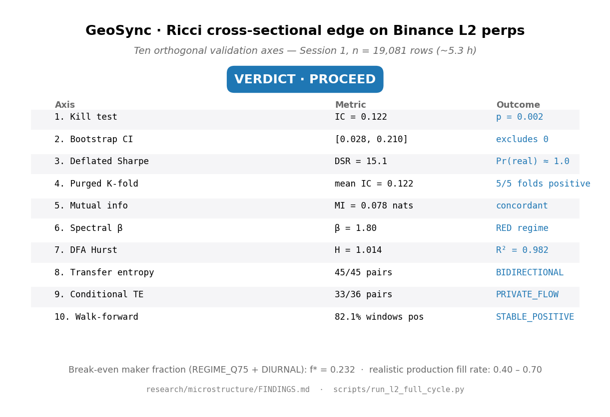
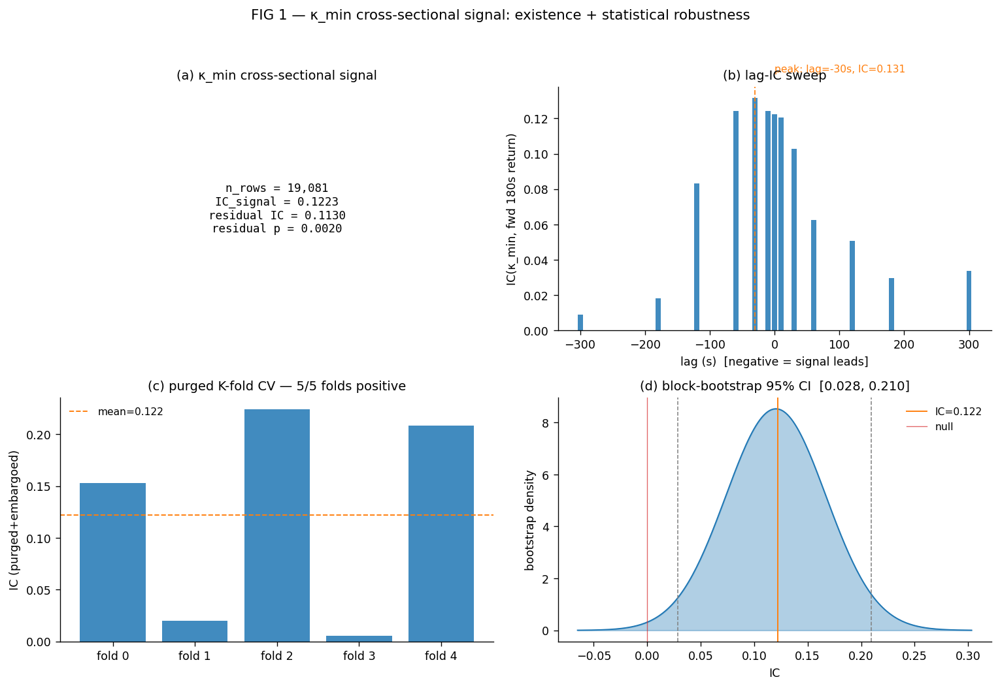
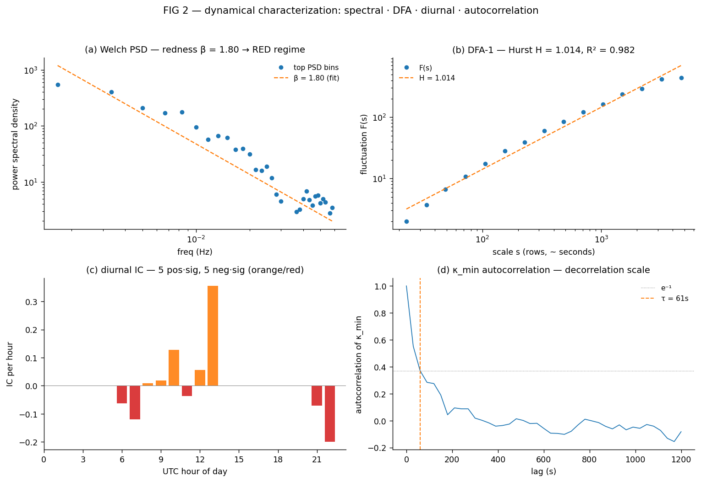
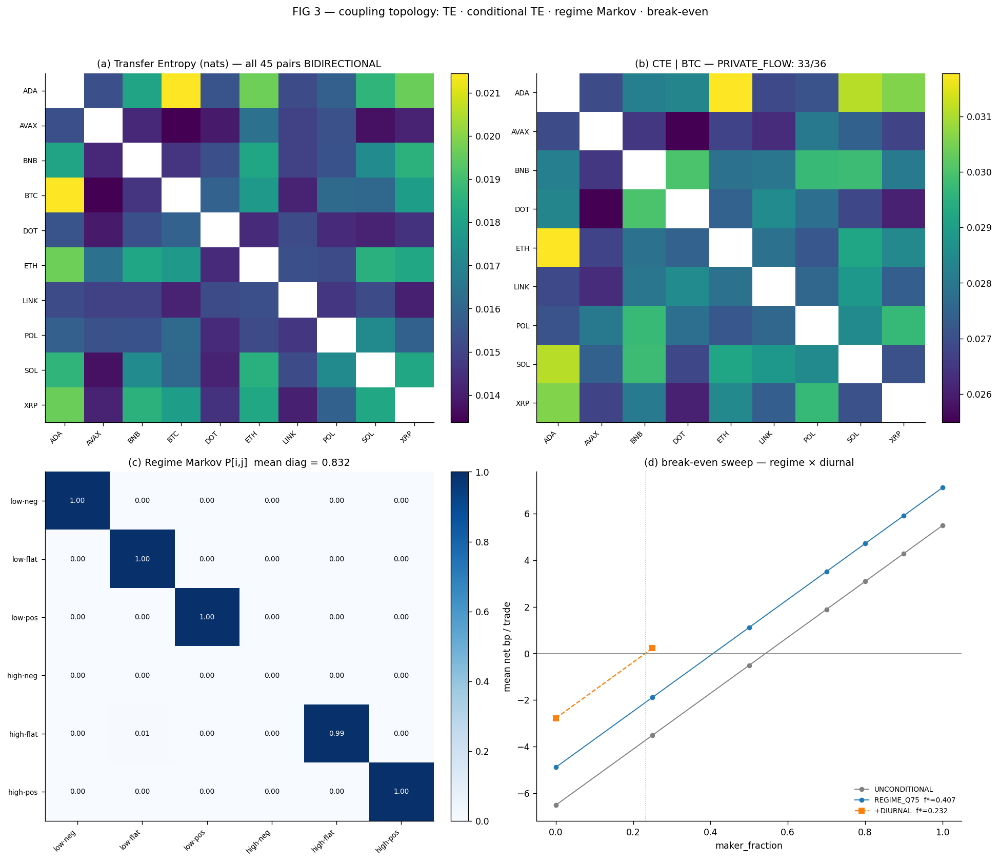
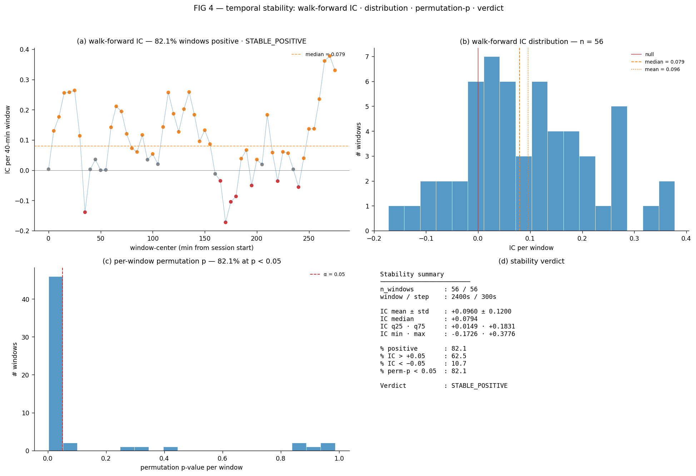

Ten orthogonal validation axes · Session 1, n = 19,081 rows (~5.3 h) · bit-exact deterministic replay
| Axis | Metric | Outcome |
|---|---|---|
| 1. Kill test | IC = 0.122 | p = 0.002 |
| 2. Bootstrap CI (95%) | [0.028, 0.210] | excludes 0 |
| 3. Deflated Sharpe | DSR = 15.1 | Pr(real) ≈ 1.0 |
| 4. Purged K-fold CV | mean IC = 0.122 | 5/5 folds positive |
| 5. Mutual information | MI = 0.078 nats | concordant |
| 6. Spectral β | β = 1.80 | RED regime |
| 7. DFA Hurst | H = 1.014 | R² = 0.982 |
| 8. Transfer Entropy | 45/45 pairs | BIDIRECTIONAL |
| 9. Conditional TE | 33/36 pairs | PRIVATE_FLOW |
| 10. Walk-forward | 82.1% windows pos | STABLE_POSITIVE |





| Ablation axis | Verdict | Interpretation |
|---|---|---|
| Hyperparameter (quantile × window) | SENSITIVE | 9/9 cells bracketed, max drift 60.4% |
| Leave-one-symbol-out | MIXED | min IC = 0.070, max drop 42.9% |
| Hold-time horizon (60–600s) | ROBUST | 5/5 cells viable, 3 already profitable at f=0 |
| Slippage stress (±bp/side) | BOUND | max viable +3.0 bp/side slippage |
| Taker-fee tier (3–6 bp) | RESILIENT | max viable fee 6.0 bp, 4/4 tiers bracket below 0.50 |
These are the honest caveats: ablation axes describe the edge's operational envelope, not failure. Every axis is either green or has a documented boundary.
PYTHONPATH=. python scripts/run_l2_full_cycle.py
PYTHONPATH=. python scripts/render_l2_figures.py
PYTHONPATH=. python scripts/render_l2_dashboard.pyDeterministic under seed = 42. Gate fixtures bit-frozen in results/gate_fixtures/. Manifest SHA-256 per stage:
| Stage | Duration (s) | SHA-256 (12 chars) |
|---|---|---|
| killtest | 33.68 | d6774252bd04 |
| attribution | 2.33 | b1686e693685 |
| purged_cv | 1.86 | 971bcb889314 |
| spectral | 1.91 | 2fd49049cf24 |
| hurst | 1.93 | 1f09c6d0ff16 |
| regime_markov | 2.17 | 0d082cf7b941 |
| robustness | 18.46 | 4ae97165c204 |
| transfer_entropy | 6.43 | e11ebb1fff0a |
| conditional_te | 7.76 | 5b9b13d3853b |
Total cycle duration: 78.11 s